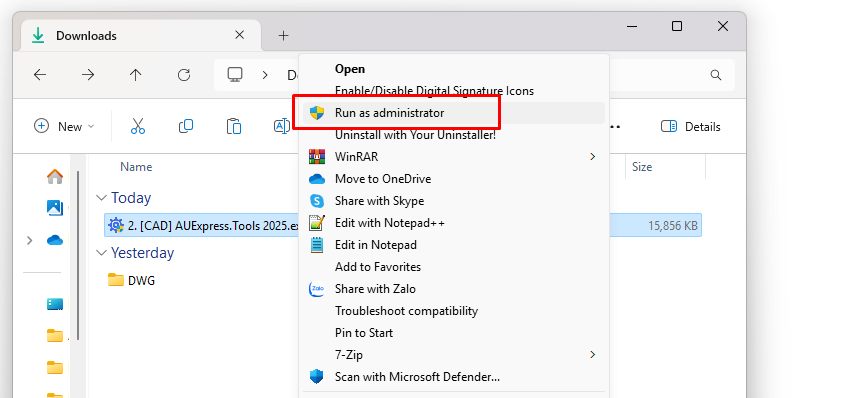

1. Cài đặt file Database_Tools.exe.
2. Download Add-in: [CAD] AUExpress.Tools 2025.exe và chạy run [Admin]:
Phiên bản [Trial] có thể sử dụng trực tiếp mà không cần đăng nhập.
Giới hạn tính năng: 15 ngày sử dụng và một số tính năng nâng cao.
Phiên bản [Premium] (không giới hạn tính năng, miễn phí hỗ trợ, fix lỗi và update).

Gõ lệnh AU_Login, nhập Username và Password để xác thực tài khoản mới.
Cách thức lấy tài khoản, bạn đọc xem mục [Chuyển khoản & Thanh toán].
1. Trước khi tiến hành cài đặt, bạn cần tắt AutoCAD.

2. Nếu bạn gặp cảnh báo quyền chạy run [Admintrastor] bạn có thể tắt cảnh báo này bằng cách vào mục:
[Change User Account Control settings] và hạ cấp độ cảnh báo về 0.

3. Nếu xuất hiện cảnh báo Virus khi nhấp OK, click vào mục [Thông Tin Thêm], chọn [Continue] và tiếp tục [Click OK] cho đến kết thúc [Finish].

Nếu không muốn xuất hiện những cảnh báo này về sau, bạn có thể Tìm kiếm Google với Từ Khóa:
[Cách sửa lỗi "This app has been blocked for your protection"] và làm theo hướng dẫn từ các bài viết đó.
Tất cả các phiên bản đều được cập nhật tính năng miễn phí cho người dùng đã đăng ký.
1 License: 749.000/máy/năm.
Chuyển khoản với QR Code hoặc [248.168.323] VPBank
Sau chuyển khoản, chụp màn hình và liên hệ Zalo/Gmail hoặc Fanpage để lấy tài khoản.
Email: autechniques@gmail.com hoặc support@autechniques.com
Zalo: 0886.083.080
💛 Best wishes 💛